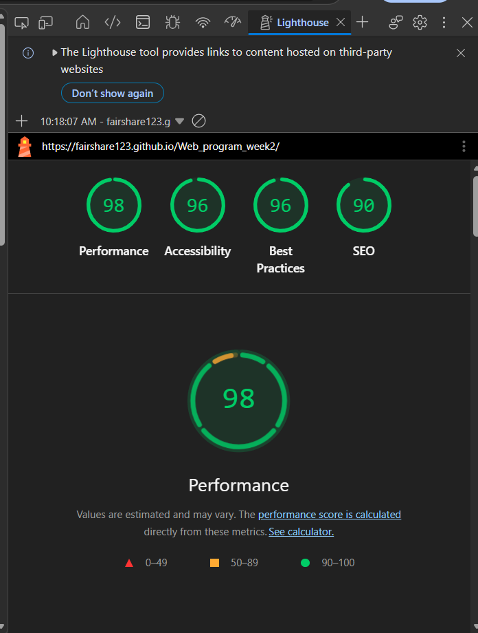
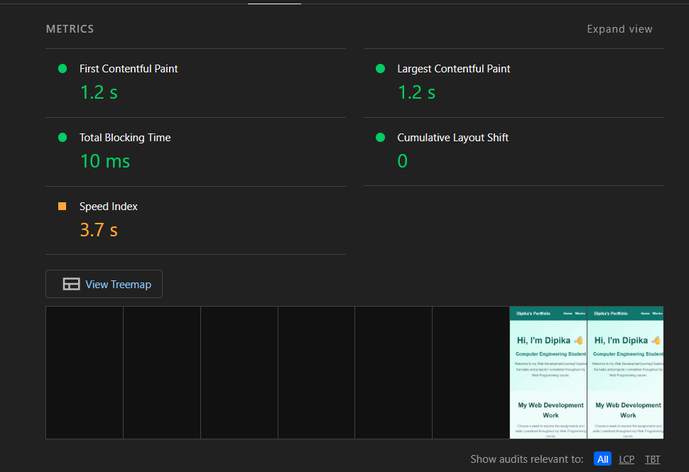
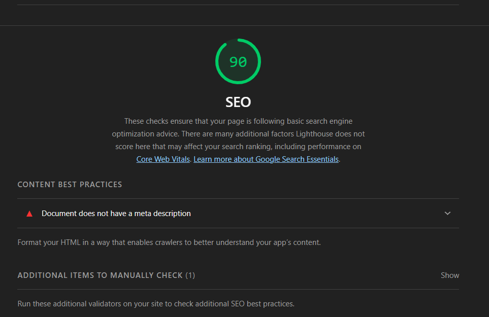
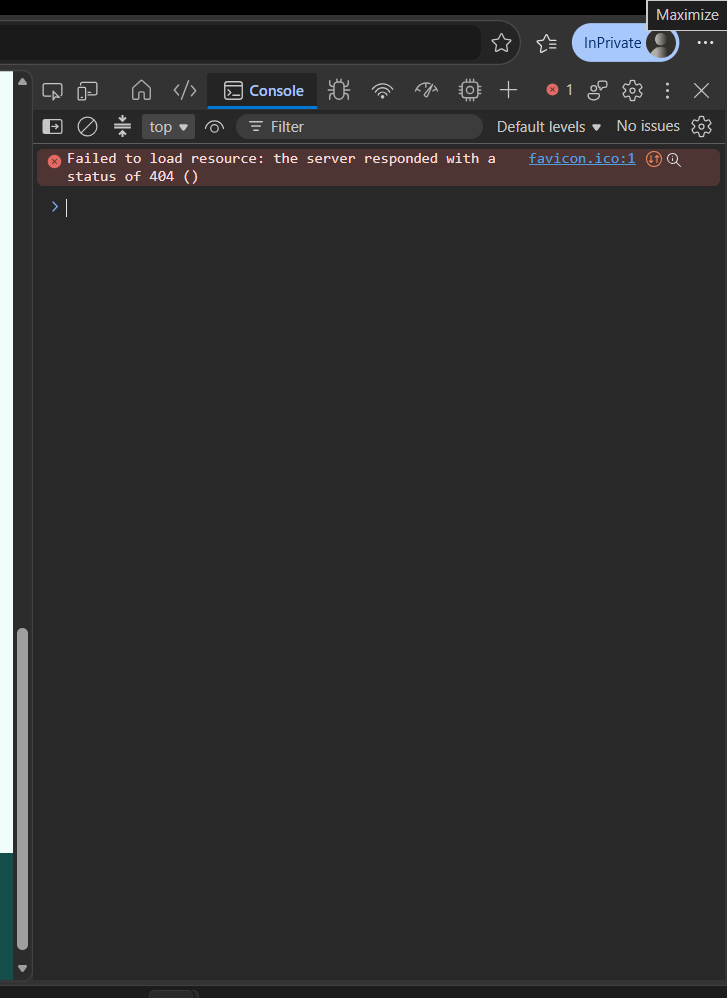
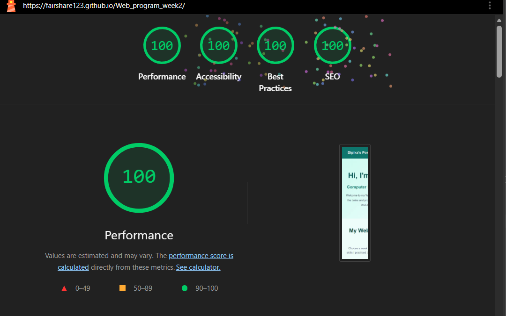
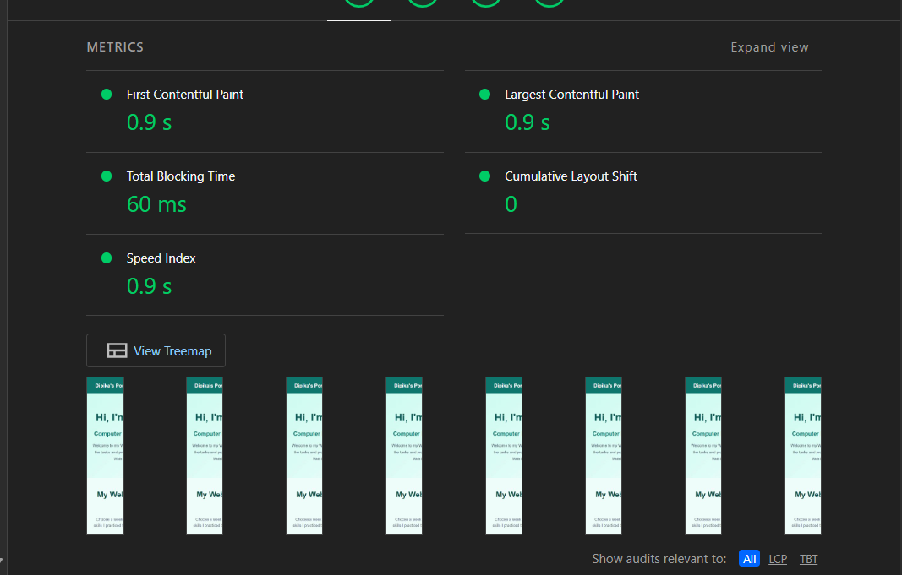

Performance and SEO Report
I tested my Web Programming portfolio with Google Lighthouse, fixed the problems it found, and tested it again. This report compares my real before-and-after results.
Test setup
- Website tested: https://fairshare123.github.io/Web_program_week2/
- Page tested: the portfolio homepage (
index.html) - Tool: Lighthouse in Microsoft Edge DevTools
- Settings: Navigation mode, Mobile device, all four categories
- Browser window: InPrivate, so extensions and saved files did not affect the results
- Before test: November 18, 2026, 10:18 AM
- After test: November 18, 2026, after uploading the changes to GitHub Pages
Original results
| Performance | Accessibility | Best Practices | SEO |
|---|---|---|---|
| 98 | 96 | 96 | 90 |
| Metric | Before |
|---|---|
| First Contentful Paint (FCP) | 1.2 s |
| Largest Contentful Paint (LCP) | 1.2 s |
| Total Blocking Time (TBT) | 10 ms |
| Cumulative Layout Shift (CLS) | 0 |
| Speed Index | 3.7 s (orange) |
Issues found by the audit
- SEO: "Document does not have a meta description." Search engines had no summary of the page to show in results.
- Best Practices: "Browser errors were logged to the console." The browser could not find a favicon (the small tab icon) and logged a 404 error for
favicon.ico. - Accessibility: "Document does not have a main landmark." This one is explained in my Week 9 Friday accessibility task.
- Performance: Speed Index was 3.7 s, the only metric not in the green range.




Changes made
-
Added a meta description and author in the
<head>ofindex.html, so search engines can describe my page.<meta name="description" content="Dipika Aryal's Web Programming portfolio: weekly HTML, CSS and JavaScript assignments, API projects, forms and accessibility work."> <meta name="author" content="Dipika Aryal"> -
Added a favicon (a small "DA" icon) written directly inside the HTML as an SVG. This removes the 404 console error, and the browser does not need to download a separate icon file.
<link rel="icon" href="data:image/svg+xml,..."> -
Added a theme colour so mobile browsers colour their address bar to match my teal theme.
<meta name="theme-color" content="#0f766e"> - Accessibility changes, including the missing main landmark, are explained in the Week 9 Friday accessibility task.
After results
| Category | Before | After |
|---|---|---|
| Performance | 98 | 100 |
| Accessibility | 96 | 100 |
| Best Practices | 96 | 100 |
| SEO | 90 | 100 |
| Metric | Before | After |
|---|---|---|
| First Contentful Paint (FCP) | 1.2 s | 0.9 s |
| Largest Contentful Paint (LCP) | 1.2 s | 0.9 s |
| Total Blocking Time (TBT) | 10 ms | 60 ms |
| Cumulative Layout Shift (CLS) | 0 | 0 |
| Speed Index | 3.7 s | 0.9 s |


Reflection
The clearest improvements came from small fixes in the <head>. Adding a meta description raised SEO from 90 to 100,
and adding a favicon removed the console error, which raised Best Practices from 96 to 100.
My page was already fast, because it has no images, external fonts or large scripts. I did not make a change aimed only at speed, so I think most of the Speed Index change (3.7 s to 0.9 s) is normal variation between Lighthouse runs, which Lighthouse itself warns about. Total Blocking Time went up slightly (10 ms to 60 ms) but is still in the green range. Next time, I would run each test several times and compare the average.
I learned that Lighthouse is useful for finding quick fixes, but a high score does not mean a site is perfect. I still had to test the keyboard navigation myself, which is covered in my accessibility task.